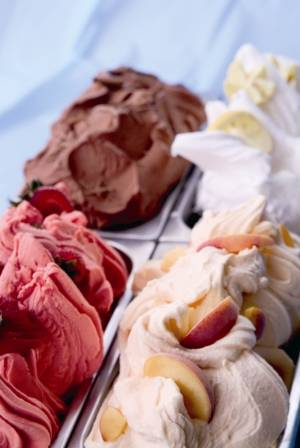

Gelato

Authentic Italian Gelato for the Home
I know nothing about the recipe.
I really want to make gelato. I much prefer it to ice cream.
Ingredients
- 4 egg yolks medium size
- 150 g granulated sugar ¾ cup
- 350 ml milk 1 ½ cup, fresh and whole
- 250 ml heavy cream 1 cup, fresh
- lemon zest or vanilla extract optional
Directions
- Whip the egg yolks with the sugar at maximum speed for about 5 minutes, until you have a soft fluffy cream.
- Pour the milk in a saucepan and bring it almost to a boil. Cook for about 5 minutes. If you have a kitchen thermometer you can check that the temperature remains at about 85°C (185 F).
- Transfer the egg and sugar fluffy cream to a saucepan. Pour the hot milk slowly. Keep mixing while you do it. If you want to flavor your gelato, this is the time to add either grated lemon zest or two drops of vanilla extract or vanilla bean. Now put it back on the heat and cook for another 5 minutes.
- Turn off the heat and add the cold heavy cream. Mix really well. Now you have a lukewarm mixture.
How to Make Gelato WITH Ice Cream Maker
Pour the basic preparation into the ice cream maker and start it. It will take about 40 minutes, depending on the model. After the necessary time, your gelato is ready!
How to Make Gelato WITHOUT Ice Cream Maker
Pour the mixture into a gelato container and place it in the freezer for about 5 hours. Every 30 minutes you have to break the frozen surface. So remove from the freezer and mix for about 30 seconds using a hand whisk or an electric whisk on low speed.